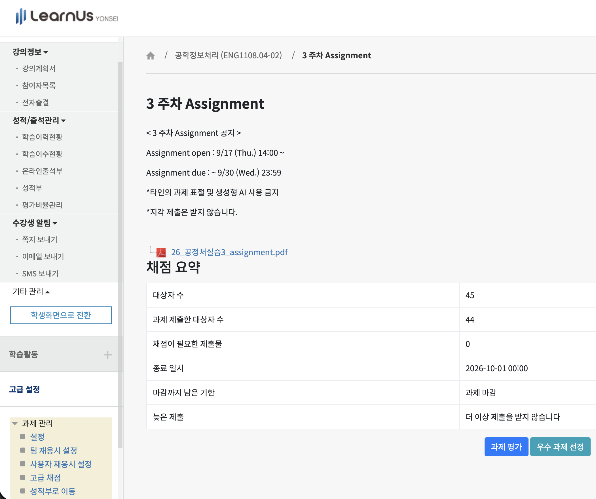
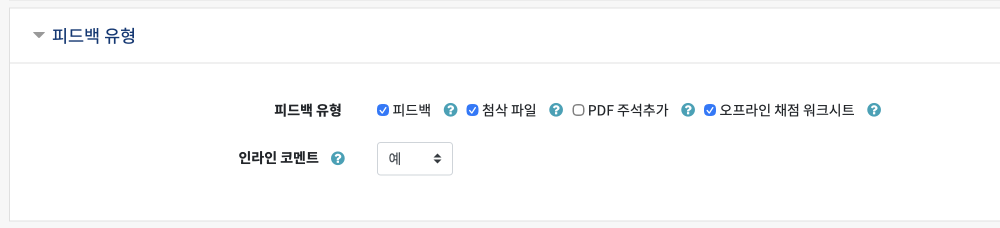
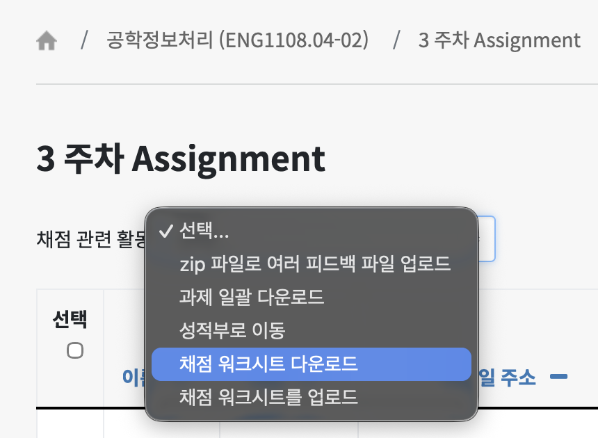
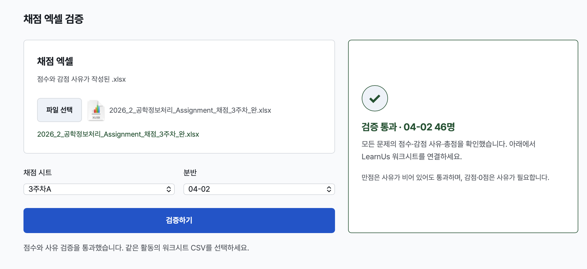
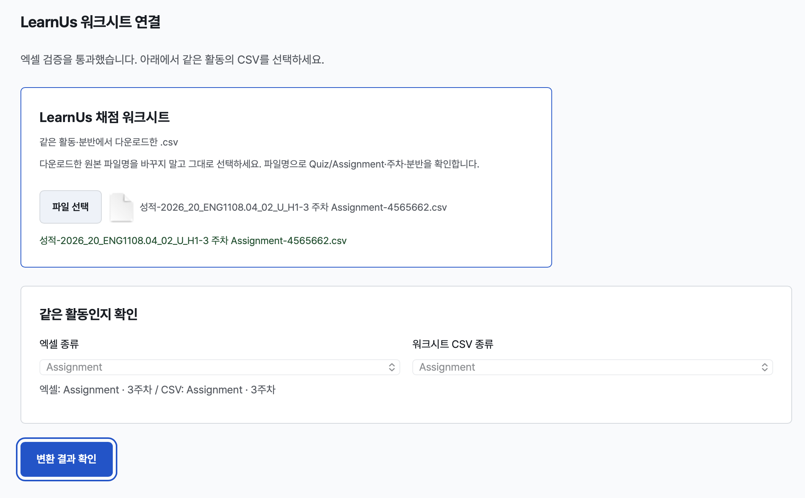
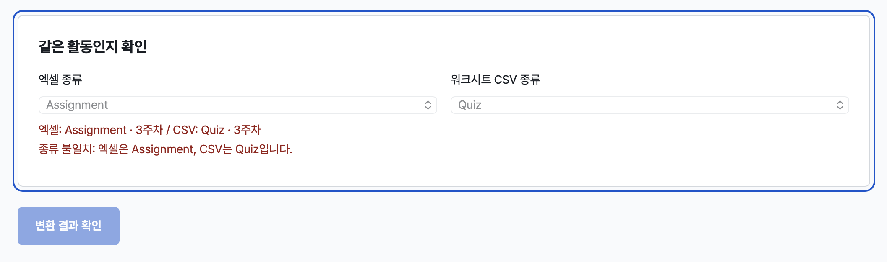
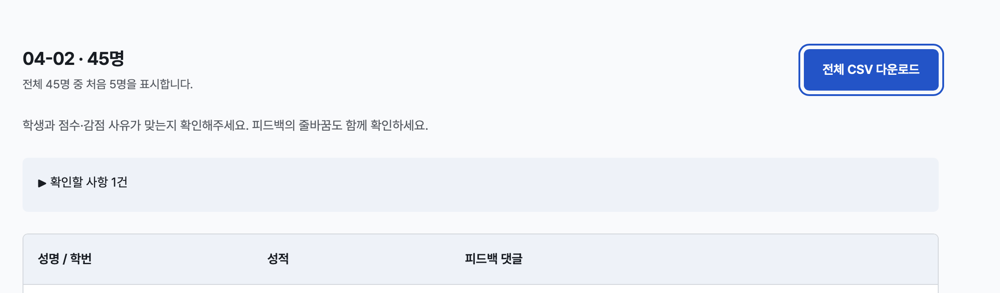
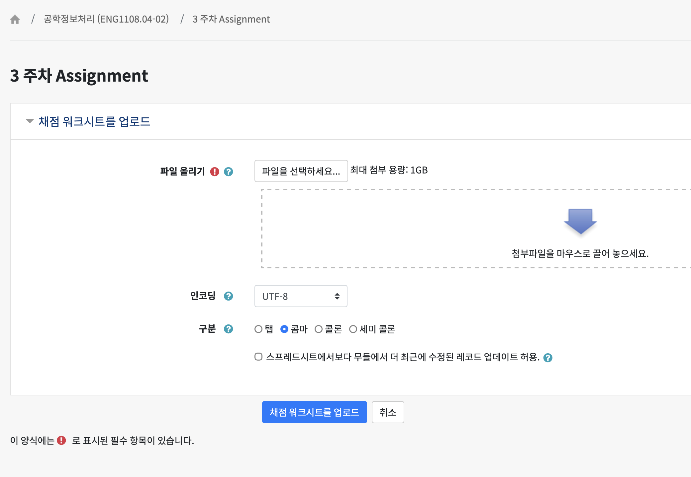

채점 워크시트 변환
채점 엑셀의 점수와 감점 사유를 LearnUs 업로드용 CSV로 옮깁니다.
처음 5명만 표시합니다.
학생과 점수·감점 사유가 맞는지 확인해주세요. 피드백의 줄바꿈도 함께 확인하세요.
| 성명 / 학번 | 성적 | 피드백 댓글 |
|---|
LearnUs의 ‘채점 워크시트 업로드’에서 CSV를 선택한 뒤 변경 목록을 확인하세요. ZIP 피드백 첨부와는 다른 기능입니다.
CSV 미리보기
LearnUs에 올릴 파일을 선택하고, 학생과 점수·피드백이 맞는지 확인해주세요.
처음 5명을 표시합니다. 파일 내용은 서버로 전송하지 않습니다.
| 성명 / 학번 | 성적 | 피드백 댓글 |
|---|
처음 5명만 보여줍니다. 다운로드한 전체 CSV의 내용은 원본 엑셀과 대조하세요.
사용방법
먼저 LearnUs에서 채점 워크시트 기능을 켠 뒤, CSV를 다운로드하세요.
해당 과제의 설정 열기
LearnUs에서 채점할 과제 또는 파일 제출형 Quiz를 엽니다. 왼쪽 아래 고급 설정 → 과제 관리 → 설정으로 들어가세요. 캡처는 3주차 Assignment 화면의 예시입니다.

왼쪽 아래의 ‘과제 관리 → 설정’을 선택합니다. 캡처 크게 보기 ↗ 피드백 기능 활성화하기
설정의 피드백 유형에서 아래 두 항목을 체크하고 저장하세요. 이미 체크된 항목은 그대로 둡니다.
- 피드백 — 감점 사유가 들어갈 댓글 칸(화면에 따라 ‘피드백 댓글’로 표시)
- 오프라인 채점 워크시트 — 점수와 댓글을 CSV로 다운로드·업로드하는 기능
‘첨삭 파일’(화면에 따라 ‘피드백 파일’)은 첨부파일용 기능으로, 이 변환기의 점수·댓글 CSV 업로드에는 필요하지 않습니다. 설정을 켜는 것만으로 성적이 입력되지는 않습니다.

‘피드백’과 ‘오프라인 채점 워크시트’를 체크하고 설정을 저장합니다. ‘첨삭 파일’은 이 CSV 변환에 필수인 항목이 아닙니다. 캡처 크게 보기 ↗ 채점 워크시트 다운로드하기
과제 화면으로 돌아와 과제 평가를 누릅니다. 해당 분반을 확인한 뒤 채점 관련 활동 → 채점 워크시트 다운로드를 선택하세요. 새 활동마다 그 활동의 워크시트를 받아야 학생 식별자가 맞습니다.

‘과제 일괄 다운로드’가 아니라 ‘채점 워크시트 다운로드’를 선택합니다. 캡처 크게 보기 ↗ 채점 엑셀 선택하고 검증하기
채점 엑셀을 선택하고 시트·분반 → 검증하기를 누릅니다. 선택한 분반 전체의 점수, 감점 사유, 학번 중복, 총점을 확인합니다. 빈 탭이나 점수·사유가 빠진 행이 있으면 해당 행을 표시하고 다음 단계로 넘어가지 않습니다. 만점은 사유가 비어 있어도 통과합니다. 수식이 있다면 Excel에서 계산하고 저장한 파일을 사용하세요.

왼쪽에서 시트·분반을 선택하고 검증합니다. 오른쪽에 초록 체크가 나타나면 아래 CSV 연결 단계로 이동합니다. 캡처 크게 보기 ↗ 원본 파일명 그대로 CSV 선택하기
검증을 통과하면 LearnUs 워크시트 CSV를 선택할 수 있습니다. LearnUs에서 다운로드한 원본 파일명을 바꾸지 말고 그대로 선택하세요. 파일명으로 Quiz ↔ Quiz, Assignment ↔ Assignment와 주차·분반을 확인하며, 불일치하면 변환을 막습니다. 같은 학생 명단이어도 활동마다 식별자가 다르므로, 반드시 채점할 활동에서 받은 CSV를 사용해야 합니다.
파일명을 바꾸면 자동 확인이 어려워집니다. 종류를 직접 선택하는 경우에는 실제 활동을 확인한 뒤 진행하세요. 파일명만으로 실제 활동의 일치를 완전히 보장할 수는 없습니다.

원본 CSV 이름을 유지하면 종류와 주차를 확인할 수 있습니다. 양쪽이 같은 활동이면 ‘변환 결과 확인’을 누릅니다. 캡처 크게 보기 ↗ 
엑셀과 CSV의 종류가 다르면 변환이 차단됩니다. 이때는 해당 활동의 워크시트를 다시 선택하세요. 캡처 크게 보기 ↗ 처음 5명 확인하고 전체 CSV 받기
변환 결과 확인을 누르면 처음 5명의 점수와 댓글을 보여줍니다. 문제별 점수를 합산하고 LearnUs 워크시트의 만점으로 환산합니다. 예를 들어 엑셀 7/10점은 워크시트 만점이 100점이면 70점입니다. 제외 학생과 기존 점수·댓글 교체 안내를 확인한 뒤 전체 CSV 다운로드를 누르세요. 파일에는 변환 대상 전체 학생이 들어갑니다.

미리보기와 확인할 사항을 검토한 뒤 ‘전체 CSV 다운로드’를 누릅니다. 캡처는 학생 정보가 있는 행을 제외한 화면입니다. 캡처 크게 보기 ↗ 전체 CSV 업로드하기
LearnUs의 채점 관련 활동 → 채점 워크시트를 업로드로 들어갑니다. 변환된 CSV를 선택하고 인코딩 UTF-8 · 구분 콤마로 설정하세요. ‘무들에서 더 최근에 수정된 레코드 업데이트 허용’은 최근 수정 내용을 덮어써야 할 때만 체크합니다.

UTF-8과 콤마를 확인한 뒤 업로드합니다. 캡처 크게 보기 ↗ 업로드 후 변경 목록의 학생·점수·감점 사유를 확인하고 확정하세요. CSV의 사유는 피드백 댓글 칸에 들어갑니다. ‘zip 파일로 여러 피드백 파일 업로드’는 첨부파일을 올리는 별도 기능입니다.
변환이 멈추는 경우
학번 중복, 잘못된 분반의 워크시트, 비어 있는 점수, 감점 사유 누락, 총점 불일치를 확인하세요. CSV는 UTF-8이어야 합니다. 엑셀에만 있고 워크시트에 없는 학생은 제외하고 안내합니다.